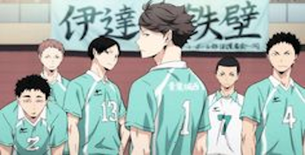

Haikyu!!
Hinata es un estudiante de secundaria que siente un repentino amor por el voleibol después de ver un partido del Campeonato Nacional en la televisión. Aún con su altura, él decide seguir los pasos del jugador estrella del campeonato, apodado el “Pequeño Gigante” y crea un club de voleibol. Al principio comienza a practicar por sí mismo, aunque más tarde otros cinco miembros se unen al equipo por su último año de secundaria. Ellos son derrotados en su primer torneo por el equipo favorito del campeonato, que incluye al llamado “Rey de la Corte” Tobio Kageyama. A pesar de que el equipo de Hinata sufre una derrota miserable, él promete superar a Kageyama y derrotarlo.



Haikyuu! es una comedia deportiva emocionante y emocionante que sigue a dos atletas decididos mientras intentan remendar una acalorada rivalidad para convertir a su equipo de voleibol de preparatoria en el mejor de Japón.
24|10|2024| Sharon Olivares